Calc¶
- CALC
- Start calculation block. This chooses what calculation to do.
[Calculation options—see below.]
- ENDCALC
- End the calculation input block.
General options¶
- ALLPATHS
- Choose all determinants (i.e. set NPATHS = -1).
- BETA [BETA]
- Set 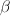.
- BETAOVERP [BETAP]
Default= 1.d-4.
Set 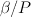.
- DELTABETA [DBETA]
Set 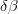. If given a negative value, calculate it exactly.
Note
What is this used for?
- DETINV [DETINV]
- Specify the root determinant for which the complete vertex series is worked out, using the determinant index obtained from a previous calculation. If DETINV is negative, the NPATHS calculations are started at this determinant.
- EXCITE [ICILEVEL]
Default 0.
Excitiation level at which to truncate determinant list. If ICILEVEL=0 then all determinants are enumerated.
- EXCITATIONS [OLD NEW]
For generation of up to double excitations use the old (completely reliable), or new (faster, but does not work for more than 2-vertex level SUMS) routine
Note
You can now use the NEW routines for all methods, right? What is the difference between NEW and OLD? (If it doesn’t say, how else can a user make an informed decision as to which to use?)
- EXCITATIONS [SINGLES DOUBLES]
Default is to use all excitations.
Restricts determinants which are allowed to be connected to the reference determinant to be either single or double excitations of the reference determinant.
Applies only to the VERTEX [SUM STAR] NEW methods.
- HAMILTONIAN [STAR]
Store the Hamiltonian. This is defaulted to ON if ENERGY is set, but can be used without ENERGY.
- STAR
- Only the connections between the root determinant and its excitations should be included in the Hamiltonian and not off-diagonal elements between excited determinants.
- MAXVERTICES [MAXVERTICES]
- Give the vertex level of the calculation. Cannot be used in conjunction with a METHODS block.
- METHOD [Method option(s)]
Specify the method for a graph theory calculation. See Method options for the available methods.
Can only be specified once if used outside of the methods block, in which case the given method is applied to all vertex levels.
- METHODS
Begin a methods block. This allows a different method for each vertex level. Each vertex level can contain EXCITATIONS, VERTICES, CYCLES and CALCVAR keywords. Each METHOD line and the options that follow it detail the calculation type for the next vertex level, with the first METHOD line used for the the second-vertex level, unless over-ridden with the VERTICES option.
The block terminates with ENDMETHODS.
For example:
METHODS METHOD VERTEX SUM NEW EXCITATIONS DOUBLES METHOD VERTEX STAR POLY EXCITATIONS SINGLES VERTICES 2 ENDMETHODS
sets the first method, at the two-vertex level, to be a complete 2-vertex sum of only doubles, and the second method, overriden to be also at the two-vertex level, to be a vertex star of singles.
Similarly:
METHODS METHOD VERTEX SUM NEW METHOD VERTEX SUM MC [Monte Carlo options] ENDMETHODS
performs a full sum at the two-vertex level and a Monte Carlo calculation at the three-vertex level.
- ENDMETHODS
- Terminate a methods block.
- PATHS [option]
Select the number of determinants taken to be the root of the graph. Usually set to 1. Valid options:
- NPATHS
- Choose the first NPATHS determinants and calculate RHOPII etc.
- ALL
- Choos all determinants (same as ALLPATHS).
- ACTIVE
- Choose only the active space of determinants: the degenerate set containing the highest energy electron.
- ACTIVE ORBITALS nDown nUp
- Set the active space to be nDown and nUp orbitals respectively from the Fermi level
- ACTIVE SETS nDown nUp
- Set the active space to be nDown and nUp degenerate sets respectively from the Fermi level
- RHOEPSILON [RHOEPSILON]
- Set the minimum significant value of an element in the
 matrix as a fraction of the maximum value in the matrix.
Matrix elements below this threshold are set to be 0.
matrix as a fraction of the maximum value in the matrix.
Matrix elements below this threshold are set to be 0. - STARCONVERGE [STARCONV]
Default 1.d-3.
Set the convergence criteria for whether a roots to the star graph is significant.
- TROTTER
Default.
Perform a Trotter decomposition to evaluate the
matrix elements.- TIMESTEPS [I_P]
- Set P, the timesteps into which 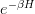 is split. Automatically sets 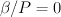 (as required) but returns an error message if BETAOVERP is also used.
- WORKOUT [NDETWORK]
Sets the number of determinants which are worked out exactly.
Note
What is this used for?
- VERTICES
Only available inside a methods block.
By default, each method takes a number of vertices corresponding to its index within the methods block, the first methods corresponding to the 2-vertex level, the second to the 3-vertex level, and so on. VERTICES overrides this, and allows the vertex level of each method to be explicitly specified, enabling, for example, the 2-vertex level to be split up and the contributions from single and double excitations of the reference determinant to be handled separately.
Method options¶
- VERTEX SUM [OLD NEW HDIAG] [SUB2VSTAR] [LOGWEIGHT]
Calculate the vertex sum approximation.
- OLD
- Diagonalise the
 matrix using the original method.
matrix using the original method. - NEW
- Diagonalise the matrix using a more modern, more
efficient method. Recommended.
- HDIAG
- Diagonalise the Hamiltonian matrix instead of the matrix
in order to calculate the weight and energy contribution of each graph.
- SUB2VSTAR
- Remove paths which were present in the 2-vertex star for each graph. If this is specified for ANY vertex level, it applies to all SUM and MC vertex levels.
- LOGWEIGHT
- Form Q as a multiplication of factors from graphs. This results
in the quantity 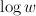 being used instead
of , which also translates to the energy expression
only involving
 not weights. Hopefully this
is size-consistent.
not weights. Hopefully this
is size-consistent.
Warning
SUB2VSTAR and LOGWEIGHT are experimental options.
- VERTEX [MC MCMETROPOLIS MCDIRECT MCMP] [HDIAG]
Perform a Monte Carlo calculation.
- MCDIRECT
Perform direct stochastic sampling for the graph theory vertex sum method, dividing each freshly generated graph by its normalized generation probability.
If MULTIMCWEIGHT is specified then the sampling generates graphs from all weighted levels using the weighting - a single MC calculation is performed.
If MULTIMCWEIGHT is not specified (default), a separate MC calculation is performed at each vertex level. Combined statistics are printed.
Warning
MULTIMCWEIGHT is not documented. Use with great caution.
- MCMP
- Perform direct stochastic sampling, as in MCDIRECT, but for the Moller–Plesset method.
- MC or MCMETROPOLIS
Perform Metropolis Monte Carlo.
This may be performed in a number of ways. The way is chosen by the location of the VERTEX MC command.
Warning
The following options appear in INPUT_DOC but, however, are incredibly poorly documented. In particular:
- No detail on the arguments the options take (e.g. BIAS).
- Some options documented don’t exist (e.g. SINGLE, BIAS, MULTI, STOCHASTICTIME).
- Sufficient tests are not present in the test suite.
Do not use.
The “options” are:
**STOCHASTICTIME** may also be specified to perform stochastic time simulations with a given **BIAS** **SINGLE** MC is performed at a single vertex level using a composite 1-vertex graph containing a full sum previously performed. **BIAS** is used to choose whether a step selects a composite (all lower levels) or a normal (this level) graph. Stochastic time MC is performed. This can only be specified in the **METHODS** section, and only at the last vertex level. Uses **EXCITWEIGHTING** for excitation generation weighting and **IMPORTANCE** for graph generation weighting **MULTI** MC is performed at a multiple vertex levels, but still using a composite 1-vertex graph containing a full sum previously performed. MULTI should be specified in all the (contiguous) vertex levels to be included (not composited) in the MC. **BIAS** is used to choose whether a step selects a composite (all lower levels) or a normal (the **MULTI** levels) graph. **MULTIMCWEIGHT** is specified for each **MULTI** level, and gives a relative weighting of selecting the vertex level graphs once a non-composite graph is chosen. Stochastic time MC is performed. This can only be specified in the **METHODS** section. Once **MULTI** has been specified, it must be specified on all subsequent vertex levels in a **METHODS** section. Uses **EXCITWEIGHTING** for excitation generation weighting and **IMPORTANCE** for graph generation weighting **FULL** Does MC at all levels using BIAS to bias the levels, **EXCITWEIGHTING** for excitation generation, and **IMPORTANCE** to for graph generation weighting. This is only available *WITHOUT* a **METHODS** section. If **HDIAG** is specified, the H-diagonalizing routine is used, otherwise, the rho-diagonalizer is used. **HDIAG** is automatically specified for **MCMP**.
- VERTEX SUM READ
- Read in from pre-existing MCPATHS file for that vertex level. Only really useful in a METHODS section.
- VERTEX STAR [ADDSINGLES COUNTEXCITS] [star method] [OLD NEW [H0] ]
Construct a single and double excitation star from all determinants connected to the root (ignoring connections between those dets). See [StarPaper] for more details.
- ADDSINGLES
Extend the star graph approach.
Add the single exctitaions which are en-route to each double excitation to that double excitation as spokes, and prediagonalize the mini-star centred on each double excitation. For example, if the double excitation is (ij->ab), then singles (i->a),(i->b),(j->a) and (j->b) are created in a star with (ij->ab), the result diagonalized, and the eigenvalues and vectors used to create a new spoke of the main star graph.
Only works with NEW.
- COUNTEXCITS
Run through all the symmetry allowed excitations first and count the connected determinants on the star. Enables the memory requirements to be reduced as only connected determinants need to be stored. However, the time taken is increased, as it is necessary to run through all determinants in the star twice. Especially useful for large systems with memory restraints, when density fitting has necessarily turned off symmetry. Also useful if a RHOEPSILON has been set to a large value so that many of the symmetry allowed excitations will be counted as disconnected.
Note
Useful for periodic calculations? Does it need just the symmetry info or the transition matrix elements as well?
- OLD
- Use a pre-generated list of determinants using the excitation routine version specified in EXCITATIONS OLD or EXCITATIONS NEW.
- NEW
- Generate determinants on the fly without storing them, using the NEW excitation routine. Much more memory efficient.
- NEW H0
Use the zeroth order N-particle Hamiltonian (shifted such that 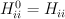) rather than the fully interacting Hamiltonian to generate the roots of the polynomial.
Note
And you’d want to use NEW H0 why exactly?
The available star methods are:
- DIAG
- Perform a complete diagonalization on the resultant matrix. This can be very slow. However, by specifying LANCZOS in the CALC block, you can do a Lanczos diagonalisation, which scales much better. EIGENVALUES can also be specify to only evaluate the first few eigenvalues.
- POLY
Use the special properties of the matrix to find the roots of the polynomial and uses them to calculate the relevant values. This is order 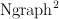.
Note
Ngraph==nDets?
- POLYMAX
- Similar to POLY but only finds the highest root of the polynomial, so is order Ngraph. It can be used when P is very large (i.e. is very large, e.g. 40).
- POLYCONVERGE
- Similar to POLY but adds i out of N 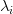 roots, such that 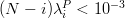, i.e. we evaluate enough roots such that a very conservative error estimate of the contribution of the remaining roots is negligible.
- POLYCONVERGE2
- Similar to POLYCONVERGE but requires 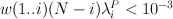, where 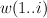 is the cumulative sum of 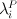, which should be a better estimate of the convergence.
The following are experimental star methods:
- MCSTAR
Use a basic implementation of the spawning algorithm in order to sample the star graph stochastically. The sampling uses elements of the Hamiltonian matrix rather than the
matrix,
so there will be some differences in the converged energy
compared to a VERTEX STAR NEW calculation.Many of the FCIMC options are also available with MCStar, and there are also some extra one.
- NODAL
- Prediagonalise a completely connected set of virtuals for each set of occupied (i,j) spin-orbitals. The diagonalised excitations are then solved as a star graph. Must be used with NEW.
- STARSTARS
- Use an approximation that the change of eigenvalues and the first element of the eigenvectors of the star graph is linear with respect to multiplying the diagonal elements by a constant. Once this scaling is found, all stars of stars are prediagonalised, and reattached to the original graph. This results in N^2 scaling, where N is the number of excitations.
- TRIPLES
- Prediagonalise an excited star of triple excitations from each double excitation, reattach the eigenvectors, and solves the complete star. Currently only available with ‘NEW‘, ‘COUNTEXCITS‘ and ‘DIAG‘.
Experimental methods¶
- VERTEX FCIMC [MCDIFFUSION]
Perform Monte Carlo calculations over pure determinant space, which is sampled using a series of ‘particles’ (or ‘walkers’).
The walkers are not necessarily unique and must be sorted at every iteration. Each walker has its own excitation generator.
MCDIFFUSION is a completely particle-conserving diffusion algorithm and is much more experimental.
FCIMC and MCDETS calculations share many of the same options (see Walker Monte Carlo options, below).
- VERTEX GRAPHMORPH [HDIAG]
Set up an initial graph and systematically improve it, by applying the
matrix of the graph and its excitations as a propagator
on the largest eigenvector of the graph. From this, an improved graph
is stochastically selected, and the process is repeated, lowering
the energy. If HDIAG is specified, it is the hamiltonian matrix
elements which determine the coupling between determinants, and it
is the hamiltonian matrix which is diagonalised in each iteration
in order to calculate the energy.Note
GRAPHMORPH has not been tested with complex wavefunctions. It will almost certainly not work for them.
- VERTEX MCDETS
Perform Monte Carlo calculations over pure determinant space, which is sampled using a series of ‘particles’ (or ‘walkers’).
MCDETS is similar to FCIMC but maintains at most one ‘particle’ at each determinant, which may then contain subparticles (which correspond to the individual ‘walkers’ in FCIMC), in a binary tree. This makes some efficiency savings where the same information about a determinant is not duplicated.
FCIMC and MCDETS calculations share many of the same options (see Walker Monte Carlo options, below).
- VERTEX RETURNPATHMC
Use a spawning algorithm which is constrained in three ways:
#. a particle can only be spawned where it will increase its excitation level with respect to the reference determinant or back to where it was spawned from. #. they will spawn back to where their parents were spawned from with probability PRet, which is specified using RETURNBIAS. # length of spawning chain must be less than the maximum length given by MAXCHAINLENGTH.
Note
How can a particle be restricted to spawning to spawning at most back to where it was spawned from and have a probability of spawning back to where its parent was spawed from? Documentation must be clearer.
This attempts to circumvent any sign problem in the double excitations and the HF, and hopefully this will result in a more stable MC algorithm. It remains to be seen if this approach is useful. Should revert to the star graph in the limit of the return bias tending to 1 or the length of the spawn chain tending to 1.
Note
FCIMC, GRAPHMORPH, MCDETS and RETURNPATHMC have not been tested with complex wavefunctions. It will almost certainly not work for them.
All four are experimental options under development.
Walker Monte Carlo options¶
The following options are applicable for both the FCIMC and MCDETS methods:
Note
I have made some guesses on the following option names. Clearly some keys are broken on George’s keyboard. Specifically:
StepsSft --> STEPSSHIFT SftDamp --> SHIFTDAMP DiagSft --> DIAGSHIFT
I also had to guess about BINCANCEL. It seems to be a FCIMC option, but was placed with MCSTAR (and was with all the VERTEX STAR methods).
This section needs to be extended substantially.
- DIAGSHIFT [DiagSft]
- Set the initial value of the diagonal shift.
- INITWALKERS [nWalkers]
Default 3000.
Set the initial population of walkers.
- NMCYC [NMCYC]
- Set the total number of timesteps to take.
- SHIFTDAMP [SftDamp]
- Damping factor (OF WHAT?!). <1 means more damping.
- STEPSSHIFT [StepsSft]
Default 100.
Set the number of steps taken before the diagonal shift is updated.
- TAU [TIMESTEP]
Default 0.0.
Set the number of evoution timesteps before the EShift is updated. Must be set such that 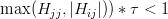 .
Note
Brilliantly, there’s a comment in the code which states (contradictorily):
For FCIMC, this can be considered the timestep of the simulation. If not set, it will default to the value which will allow the fastest destruction of walkers.
The following options are only available in FCIMC calculations:
- READPOPS
- Read the initial walker configuration from the file POPSFILE. DIAGSHIFT and INITWALKERS given in the input will be overwritten with the values read in form POPSFILE.
- SCALEWALKERS [fScaleWalkers]
- Scale the number of walkers by fScaleWalkers, after having read in data from POPSFILE.
- STARTMP1
- Set the initial configuration of walkers to be proportional to the MP1 wavefunction.
- GROWMAXFACTOR [GrowMaxFactor]
Default 9000.
Set the factor by which the initial number of particles are allowed to grow before they are culled.
- CULLFACTOR [CullFactor]
Default 5.
Set the factor by which the total number of particles is reduced once it reaches the GrowMaxFactor limit
- NOBIRTH
- Force the off-diagonal (?) matrix elements to become zero,
and hence obtain an exponential decay of the initial populations
on the determinants, at a rate which can be exactly calculated and
compared against.
- MCDIFFUSE [Lambda]
Default 0.0.
Set the amount of diffusion compared to spawning in the FCIMC algorithm.
- FLIPTAU [FlipTauCyc]
Default: off.
Cause time to be reversed every FlipTauCyc cycles in the FCIMC algorithm. This might help with undersampling problems.
- NON-PARTCONSDIFF
- Use a seperate partitioning of the diffusion matrices, in which the antidiffusion matrix (+ve connections) create a net increase of two particles.
- FULLUNBIASDIFF
- Fully unbias for the diffusion process by summing over all connections.
- NODALCUTOFF [NodalCuttoff]
- Constrain a determinant to be of the same sign as the MP1 wavefunction at that determinant, if the normalised component of the MP1 wavefunction is greater than the NodalCutoff value.
- NOANNIHIL
- Remove the annihilation of particles on the same determinant step.
The following option are only available in MCSTAR calculations:
- BINCANCEL
- This is a seperate method to cancel down to find the residual walkers from a list, involving binning the walkers into their determinants. This has to refer to the whole space, and so is much slower. See also the WAVEVECTORPRINT and POPSFILE options in the LOGGING block.
Return Path Monte Carlo options¶
- MAXCHAINLENGTH [CLMAX]
- Set the maximum allowed chain length before a particle is forced to come back to its origin.
- RETURNBIAS [PRet]
- Set the bias at any point to spawn at the parent determinant.
Perturbation theory options¶
- MPTHEORY [ONLY]
In addition to doing a graph theory calculation, calculate the Moller–Plesset energy to the same order as the maximum vertex level from the reference determinant (e.g. with 2-vertex sum the MP2 energy is obtained, with 3-vertex the MP3 energy etc. Note that the MP2 energy can be obtained in conjunction with a VERTEX STAR calculation.
- ONLY
Run only a MP2 calculation. This is only available when compiled in parallel. The only relevant CALC options are the EXCITATIONS options: all other CALC keywords are ignored or over-ridden. No LOGGING options are currently applicable.
Whilst in principle integrals are only used once, this optimal algorithm is not currently implemented. The speed of a CPMD-based calculation thus benefits from having a UMatCache of non-zero size.
Warning
It is currently assumed that the calculation is restricted.
Note
INPUT_DOC has this to say:
Instead of a normal path-integral expansion **MC**, do a Moller--Plesset. Requires **HDIAG**, and **BIAS**=0.D0. Can be used without a **METHODS** section. If a **METHODS** section is needed to specify different numbers of cycles at each level, then **MCDIRECTSUM** must also be set.
I am sure this is out of date...
- EPSTEIN-NESBET
- Apply Epstein–Nesbet perturbation theory, rather than Moller–Plesset. Only works for VERTEX SUM NEW and VERTEX SUM HDIAG and only at the 2-vertex level.
- LADDER
- Use ladder diagram perturbation theory, rather than Moller–Plesset. The energy denominator is 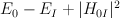. Only works for VERTEX SUM NEW and VERTEX SUM HDIAG and only at the 2-vertex level.
- MPMODTHEORY
- Perform a hybrid of Epstein–Nesbet and Moller–Plesset theory, which includes only the 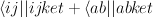 terms in the denominator. Only works for VERTEX SUM NEW and VERTEX SUM HDIAG and only at the 2-vertex level.
Diagonalisation options¶
Options for performing a full diagonalisation in the space of the full basis of spin orbitals.
Warning
This quickly becomes prohibitively expensive as system size increases.
- ACCURACY [B2L]
- Desired level of accuracy for Lanczos routine.
- BLOCK [ON OFF]
Default off.
Determines whether the Hamiltonian is calculated for each block or not. This only works for COMPLETE.
- BLOCKS [NBLK]
- Set number of blocks used in Lanczos diagonalisation.
- COMPLETE
- Perform a full diagonalisation working out all eigenvectors and eigenvalues. if HAMILTONIAN is OFF, discard the eigenvectors and eigenvalues after having used them for calculation. Relevant options are HAMILTONIAN and BLOCK.
Note
When would it be advantageous to save the eigenvalues and -vectors are a diagonalisation?
- EIGENVALUES [NEVAL]
- Required number of eigenvalues.
- ENERGY
Calculate the energy by diagonalising the Hamiltonian matrix. Requires one of COMPLETE, LANCZOS, or READ to be set.
Exact E(Beta) is printed out as:
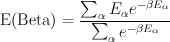The result will, of course, change depending upon the symmetry subspace chosen for diagonalization for finite temperatures.
The diagonalization procedure creates a list of determinants, which is printed out to the DETS file.
The weight, 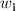 and weighted energy,
 are also calculated for all NPATH determinants.
are also calculated for all NPATH determinants.Note
ENERGY was documented twice in the INPUT_DOC file. This is not particularly helful...
I have (hopefully) combined them correctly.
- KRYLOV [NKRY]
- Set number of Krylov vectors.
- LANCZOS
Perform a Lanczos block diagonalisation on the Hamiltonian matrix.
Relevant parameters are BLOCKS, KRYLOV, ACCURACY, STEPS and EIGENVALUES.
- READ
- Read in eigenvectors and eigenvalues of the Hamiltonian matrix from a previous calculation.
- STEPS [NCYCLE]
- Set the number of steps used in the Lanzcos diagonalisation.
Graph morphing options¶
A new approach developed by George Booth. Take an initial starting graph and over many iterations allow the determinants contained within the graph to change, so that the resultant graph is a better approximation to the true ground state.
- GRAPHBIAS [GraphBias]
- If at each iteration the graph is being completely renewed, then this bias specifies the probability that an excitation of the previous graph is selected to try and be attached, rather than one of the determinants in the previous graph.
- GRAPHSIZE [NDets]
- Specify the number of determinants in the graph to morph.
- GROWGRAPHSEXPO [GrowGraphsExpo]
Default is 2.D0.
The exponent to which the components of the excitations vector and the eigenvector are raised in order to turn them into probabilities. The higher the value, the more that larger weighted determinants will be favoured, though this might result in the graph growing algorithm getting stuck in a region of the space.
- GROWINITGRAPH
- Grow the initial graph non-stochastically from the excitations of consecutive determinants.
- INITSTAR
Set up the completely connected two-vertex star graph, and use as the starting point for the morphing.
Automatically changes the NDets parameter to reflect the number of double excitations in the system.
- ITERATIONS [Iters]
- The number of graph morphing iterations to perform.
- MAXEXCIT [iMaxExcitLevel]
- Limit the size of the excitation space by only allowing excitations out to iMaxExcitLevel away from HF reference determinant.
- MCEXCITSPACE [NoMCExcits]
- Stochastically sample the space of excitations from each determinant in the graph with NoMCExcits determinants chosen per determinant.
- MOVEDETS [NoMoveDets]
- Grow the graphs using an alternative Monte Carlo, where a number
of determiants are deleted from the previous graph and reattached
elsewhere in the graph in a stochastic manner, according to the
probabilities given by the application of the propagator
to the eigenvector of the previous graph.
- NOSAMEEXCIT
- Ignore the connections between determinants which are of the same excitation level in comparison to the reference determinant. Currently only available in conjunction with INITSTAR, so the starting graph is simply the doubles star graph (with no cross connections).
- ONEEXCITCONN
- Grow the graph by attaching only determinants which differ by one excitation level to the connecting vertex in the previous graph. Currently not implemented with MoveDets.
- SINGLESEXCITSPACE
- Restrict the space into which the current graph is allowed to morph to just single excitations of the determinants in the current graph. This should reduce the scaling of the algorithm.
Monte Carlo options¶
Options for performing a Monte Carlo calculation on a vertex sum (as specified in the METHODS section).
The Monte Carlo routines have only ever been tested for molucular and model systems and probably are not currently functional for CPMD or VASP based calculations.
See the reports by Ramin Ghorashi ([RGPtIII]) and George Booth ([GHBCPGS]).
- CALCVAR
Only available for performing full vertex sums using the HDIAG formulation to evaluate the thermal density matrix elements.
Calculate a theoretical approximation to the expected variance if a non-stochastic MC run were to be performed, with the parameters given, at the chosen vertex level. Currently the expected variance is sent to STOUT as a full variance for the total energy ratio. Causes the calculation to take longer since the generation probabilities of the graphs must all be calculated. The sum over graphs of the generation probabilities is also printed out for each vertex level. This should equal 1, since we are working with normalised probabilities.
- POSITION [IOBS JOBS KOBS]
- Sets the position of the reference particle.
- CIMC
- Perform a configuration interation space Monte Carlo.
- BETAEQ [BETAEQ]
Default is set to be , as set above.
Set to have a different value for the equilibriation steps.
Note
What are the equilibriation steps?
- BIAS [G_VMC_FAC]
Default 16.
Vertex level bias for FULL MC. Positive values bias toward larger graphs, negative values towards smaller graphs.
For SINGLE and MULTI level MC (using a composite 1-vertex graph containing a full sum previously performed), this is the probability of generating a graph which is not the composite graph. The default is invalid, and this must be set manaully. Stochastic time MC is used. If BIAS is negative, then | BIAS | is used, but stochastic-time MC is not performed.
Note
BIAS seems to do two very different things if it is set to a negative value. Please clarify.
- DETSYM [MDK(I), I=1,4]
The symmetry of the CIMC determinant.
Note
Specify the symmetry how?
Note
If any if the CIMC options are set without CIMC being specified, the code will return an error and exit.**
- EQSTEPS [IEQSTEPS]
- The number of equilibriation sets for the CI space Monte Carlo routine.
- GRAPHEPSILON [GRAPHEPSILON]
Default 0.0.
The minimum significant value of the weight of a graph.
Ignore the contributions to the weight and
of all
graphs with a weight that is smaller in magnitude than GRAPHEPSILON.- IMPORTANCE [G_VMC_PI]
Ddefault 0.95.
Set the generation probability for the MC routine. This is the probability that new determinants are excitations of the pivot, i.
- MCDIRECTSUM
- Perform Monte Carlo on graphs summing in energies weighted with the weight/generation probability of the graph.
- PGENEPSILON [PGENEPSILON]
Default 0.0.
Set the minimum significant value of the generation probability of a graph.
Because for larger graphs, the calculation of the generation probability is subject to numerical truncation errors, generation probabilities which are lower than a certain value are unreliable, and can cause the Monte Carlo algorithm to get stuck: if a graph had a very small generation probability, it would be difficult for a Monte Carlo run to accept a move to a different graph. If the magnitude of the generation probability of a graph is smaller than PGENEPSILON, then a new graph is generated.
Setting this too high could cause problems in the graph generation phase, so NECI will exit with an error if it generates 10000 successive graphs each with generation probabilities below PGENEPSILON.
- SEED [G_VMC_SEED]
Default -7.
Set the random seed required for the Monte Carlo calculations.
- STEPS [IMCSTEPS]
- Set the number of steps for the CI space Monte Carlo routine.
- VVDISALLOW
- Disallow V-vertex to V’-vertex transitions in stochastic time Monte Carlo: i.e. allow only transitions to graphs of the same size.
Weighting schemes¶
By default the vertex sum Monte Carlo algorithm selects excitations with no bias. The variance of a Monte Carlo calculation can be reduced by preferentially selecting for certin types of excitation.
- EXCITWEIGHTING [g_VMC_ExcitFromWeight g_VMC_ExcitToWeight G_VMC_EXCITWEIGHT] [g_VMC_ExcitToWeight2]
Default 0.d0 (unweighted) for all values.
A weighting factor for the generation of random excitations in the vertex sum Monte Carlo. A parameter set to zero has a corresponding weighting factor of 1.
For generating an excitation from occupied spin orbitals i and j to unoccupied spin orbitals k and l:
- the probability of choosing pair (ij) is proportional to
- 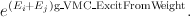
- the probability of choosing pair (kl) is proportional to
- 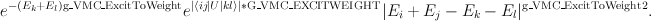
- POLYEXCITWEIGHT [g_VMC_ExcitFromWeight g_VMC_PolyExcitToWeight1 g_VMC_PolyExcitToWeight2 G_VMC_EXCITWEIGHT]
Default 0.0 for all values (i.e. unweighted: all weighting factors are set to 1).
Weighting system for the choice of virtual orbitals in the excitations.
The probability of choosing the pair of spin orbitals, kl, to excite to is set to be constant for 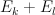 is less than g_VMC_PolyExcitToWeight1. For higher energy virtual orbitals, the weighting applied is a decaying polynomial which goes as:
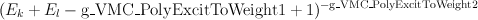
g_VMC_PolyExcitToWeight1 is constrained to be not more than the energy of the highest virtual orbital.
- POLYEXCITBOTH [g_VMC_PolyExcitFromWeight1 g_VMC_PolyExcitFromWeight2 g_VMC_PolyExcitToWeight1 g_VMC_PolyExcitToWeight2 G_VMC_EXCITWEIGHT]
Identical to POLYEXCITWEIGHT, except that the polynomial weighting function applies also to the occupied orbitals. This means that there is another variable, since now the ‘ExcitFrom’ calculation also needs a value for sigma, and for the exponent. The sigma variables are now both under similar constraints as specified above, which means that they cannot be larger or smaller than the highest and lowest energy orbital respectivly. This prevents the PRECALC block from getting stuck, or from finding local variance minima.
Note
What is sigma?
- CHEMPOTWEIGHTING [g_VMC_PolyExcitFromWeight2 g_VMC_PolyExcitToWeight2 G_VMC_EXCITWEIGHT]
- Weighting is of the same form as POLYEXCITBOTH, but sigma is now constrained to be at the chemical potential of the molecule. Has only two parameters with which to minimise the expected variance.
- CHEMPOT-TWOFROM [g_VMC_ExcitWeights(1) g_VMC_ExcitWeights(2) g_VMC_ExcitWeights(3) G_VMC_EXCITWEIGHT]
When choosing the electron to excite, use a a increasing polynomial up to the chemical potential and a decaying polynomial for spin orbitals above the chemical potential, in order to encourage mixing of the configurations around the HF state. Contains three adjustable parameters and testing needs to be done to see if this is beneficial. Expected to make more of a difference as the vertex level increases.
Note
What is the actual weighting form of CHEMPOT-TWOFROM?
- UFORM-POWER
- New power form for the U-matrix element weighting using the
appropriate EXCITWEIGHT element, which is believed to be
better. This uses the form
 , rather than the
exponential form.
, rather than the
exponential form.
Experimental options¶
Note
More documentation on these options needed.
- EXCITATIONS FORCEROOT
- Force all excitations in VERTEX [SUM STAR] NEW calculations to come from the root.
- EXCITATIONS FORCETREE
- Disallow any excitations in a VERTEX SUM NEW which are connected to another in the graph, forcing a tree to be produced. Not all trees are produced however.
- FULLDIAGTRIPS
- An option when creating a star of triples, to do a full diagonalisation of the triples stars, without any prediagonalisation. Very very slow...
- LINEPOINTSSTAR [LinePoints]
- Set the number of excited stars whose eigenvalues are evaluated when using StarStars, in order to determine linear scaling.
- NOTRIPLES
- Disallow triple-excitations of the root determinant as the 3rd vertex in HDIAG calculations at the third vertex level and higher.
| [StarPaper] | Electron correlation from path resummations: the double-excitation star, Alex J. W. Thom, George H. Booth, and Ali Alavi, Phys. Chem. Chem. Phys., 10, 652-657 (2008). |
| [GHBCPGS] | CPGS report, George Booth. |
| [RGPtIII] | Part III report, Ramin Ghorashi. |